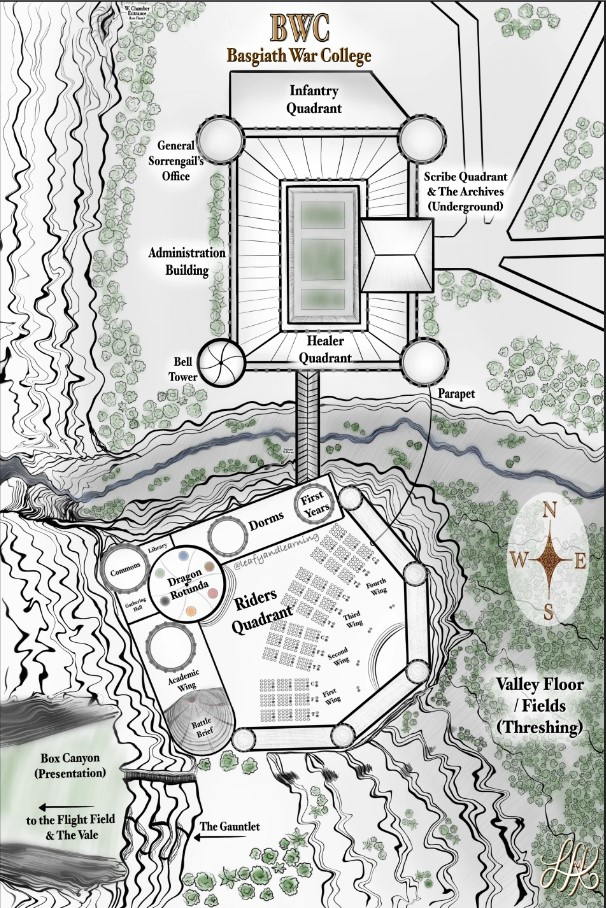
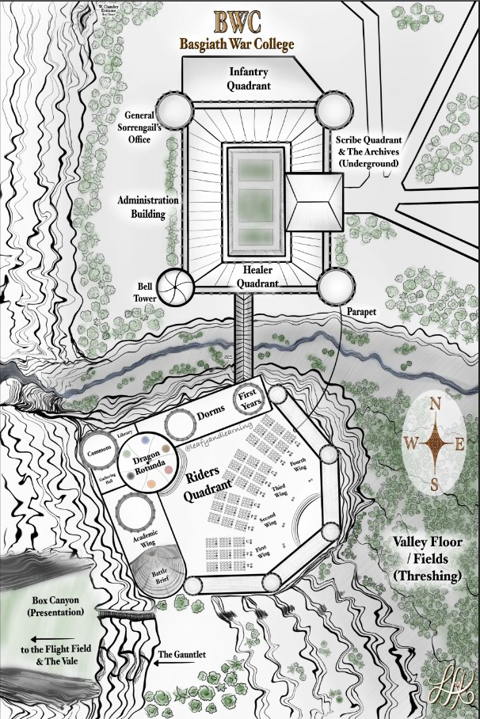

Welcome to Basgiath, here is a map of the campus:
This image was sourced from leafyandlearning on Instagram.
Welcome, Cadet, to Basgaith War College
—An Official Communication from the Office of the Commandant, Navarre
You have survived the Gauntlet. That alone is more than most will ever claim. But survival is only the beginning.
Now, you stand at the threshold of purpose. Each cadet who crosses these halls must choose where they will serve the kingdom of Navarre—with sword, scale, ink, or flame. Your quadrant is more than a designation. It is your duty. Your legacy. Your life. Choose wisely, Cadet. Your future—and the fate of Navarre—depends on it.
For the Kingdom. For Victory.
Welcome to Basgiath, here is a map of the campus:
This image was sourced from leafyandlearning on Instagram.